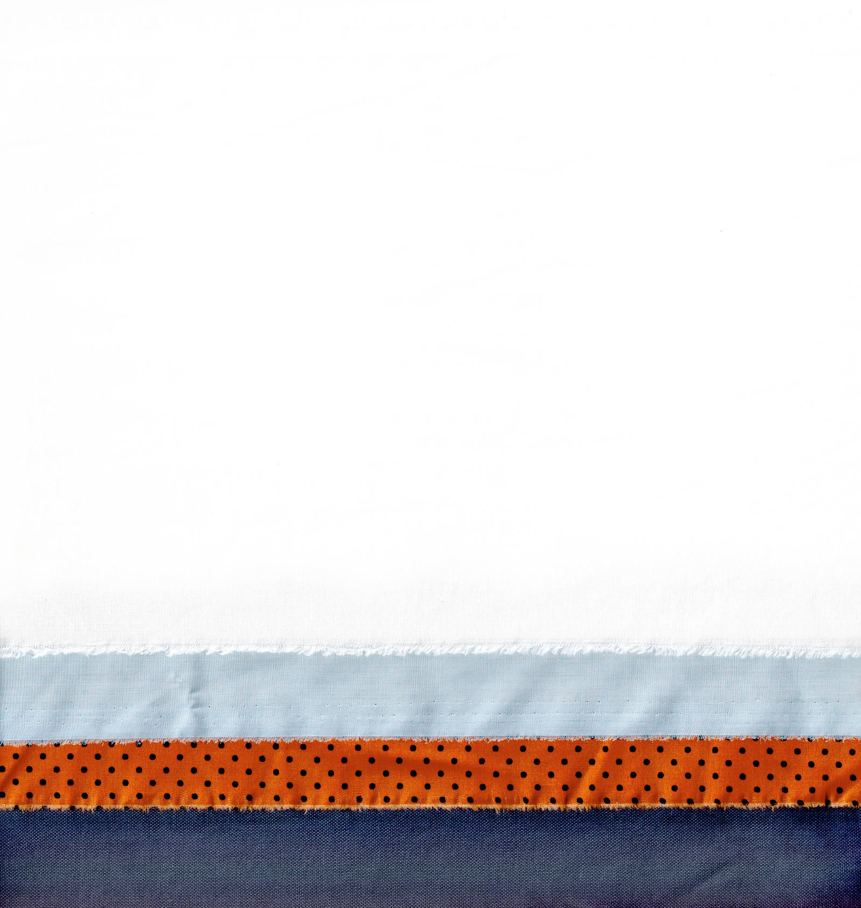

<link rel="import" href="../../bower_components/polymer/polymer-element.html">
<link rel="import" href="../../bower_components/polymer/lib/mixins/gesture-event-listeners.html">
<link rel="import" href="shared-styles.html">
<link rel="import" href="gofrank-tile.html">

<dom-module id="gofrank-home">
  <template>
    <style>
      :host {
        display: block;
        text-align: center;
      }

      #background-img {
        position: fixed;
        left: 0;
        bottom: 0px;
        width: 100%;
        object-position: center;
        z-index: 0;
        display: none;
/*        transform:rotate(3deg);
*/      }

      @media only screen and (min-width: 1024px) {
        #background-img {        
          display: block;
        }
      }

      #wrapper {
        width:100%;
        padding: 0px;
        background-color: rgba(255,255,255,1);
        position: relative;
        border-radius:10px;
      }

      @media only screen and (min-width: 1024px) {
        #wrapper {
          margin: 40px auto;
          width: 720px;
          padding: 24px;
        }
      }

      #logo {
        display:none;
      }

      @media only screen and (min-width: 1024px) {
        #logo {
          display:block;
          width:250px;
          margin:auto;
        }
      }

      #intro {
        @apply --body-font-mobile;        
        margin: 16px auto;
      }

      #intro br {
        display: none;
      }

      @media only screen and (min-width: 375px) {
        #intro {
          margin: 24px auto 32px;  
        }         
        #intro br {
          display:block;
        }      
      }

      @media only screen and (min-width: 1024px) {
        #intro {
          @apply --body-font-desktop;   
          margin: 24px auto 48px;     
        }
      }      

      #switch {
        width: 70%;
        display:flex;
        margin: 24px auto;
        @apply --filter-button;
        @apply --ui-font-desktop;   
        font-weight:bold;     
      }

      #switch > div {
        flex: 1;
        display: flex;
        align-items: center;
        justify-content: center;
        border-radius: 100px;
      }

      @media only screen and (min-width: 1024px) {
        #switch {
          @apply --ui-font-desktop;
          width: 35%;
        }
      }      

      .active {
        background: var(--gofrank-lightblue);
        font-weight: bold;
      }

      #categories {
        display: grid;
        grid-template-columns: 1fr 1fr 1fr;
        --border: 1px solid var(--gofrank-lightgray);
        margin: auto;
      }

      @media only screen and (min-width: 1024px) {
        #categories {
          grid-template-columns: 1fr 1fr 1fr 1fr 1fr;
        }
      }       

      .child {
        display: flex;
        flex-direction: column;
        align-items: center;
        justify-content: center;
/*        height: 20vh;
        width: 20vh;*/
        transform-origin: 50% 50%;
      }

      .child:nth-child(1),
      .child:nth-child(2),
      .child:nth-child(3) {
        border-bottom: var(--border);
      }

      .child:nth-child(7),
      .child:nth-child(8),
      .child:nth-child(9) {
        border-top: var(--border);
      }

      .child:nth-child(1),
      .child:nth-child(4),
      .child:nth-child(7) {
        border-right: var(--border);
      }

      .child:nth-child(3),
      .child:nth-child(6),
      .child:nth-child(9) {
        border-left: var(--border);
      }
          

/*      .child img {
        transform: scale(1.1);
      }
*/
      /*.child h6 {
        margin: 18px 0 0 0;
        font-size: 13px;
        font-weight: 400;
        color: rgba(0,0,0,0.48);
        text-transform: capitalize;
      }
      */
    </style>

    

    <div id="wrapper">

      <article id="logo">
        
      </article>

      <article id="intro">
        We are your guide towards a clean wardrobe. <br>What can we help you look for?
      </article>

      <div id="switch">
        <div>Women</div>
        <div class="active">All</div>
        <div>Men</div>
      </div>

      <section id="categories">
        <gofrank-tile
          icon="shirts"
          class="child"
          on-click="_handleTileTap"
          ></gofrank-tile>        
        <gofrank-tile
          icon="sweaters"
          class="child"
          on-click="_handleTileTap"
          ></gofrank-tile>
        <gofrank-tile
          icon="bottoms"
          class="child"
          on-click="_handleTileTap"
          ></gofrank-tile>
        <gofrank-tile
          icon="dresses"
          class="child"
          on-click="_handleTileTap"
          ></gofrank-tile>
        <gofrank-tile
          icon="accessories"
          class="child"
          on-click="_handleTileTap"
          ></gofrank-tile>
        <gofrank-tile
          icon="outerwear"
          class="child"
          on-click="_handleTileTap"
          ></gofrank-tile>
        <gofrank-tile
          icon="underwear"
          class="child"
          on-click="_handleTileTap"
          ></gofrank-tile>
        <gofrank-tile
          icon="bags"
          class="child"
          on-click="_handleTileTap"
          ></gofrank-tile>
        <gofrank-tile
          icon="shoes"
          class="child"
          on-click="_handleTileTap"
          ></gofrank-tile>

      </section>

    </article>

  </template>

  <script>
    /**
     * @customElement
     * @polymer
     */
    class GofrankHome extends Polymer.Element {
      static get is() { return 'gofrank-home'; }
      static get properties() {
        return {
          prop1: {
            type: String,
            value: 'gofrank-home'
          },
        };
      }

      _handleTileTap(evt) {
        var img = evt.target.shadowRoot.querySelector('img');
        var imgBounds = img.getBoundingClientRect();

        var clone = img.cloneNode(true);
        clone.style.transformOrigin = '50% 50%!important';
        clone.style.transform = 'scale(1.1)';
        clone.style.position = 'absolute';
        clone.style.zIndex = 1;
        clone.style.top = imgBounds.top + 'px';
        clone.style.left = imgBounds.left + 'px';
        clone.style.width = imgBounds.width + 'px';
        clone.style.height = imgBounds.height + 'px';
        clone.style.transition = '0.6s all ease';
        window.document.body.appendChild(clone);

        window.setTimeout(() => {
          window.requestAnimationFrame(() => {
            clone.style.left = `50%`;
            clone.style.top = '18px';
            clone.style.transform = 'scale(1.25) translateX(-50%)';
          })
        }, 0);

        this.dispatchEvent(new CustomEvent('tile-tap', {detail: {icon: evt.target.icon}}));

      }

    }

    window.customElements.define(GofrankHome.is, GofrankHome);
  </script>
</dom-module>
